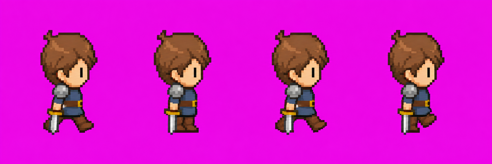
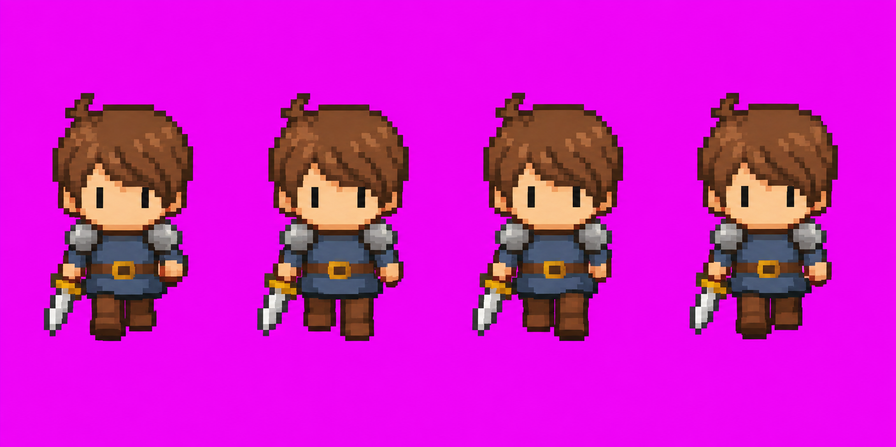

전사 · 정면과 오른쪽 걷기
같은 캐릭터의 두 방향을 같은 속도로 비교합니다.
1 / 4
이미지를 불러오는 중입니다.
발을 벌리고 모으는 자세와 머리 모양을 비교해 보세요. 검 뒤 다리는 일부 가려집니다. 두 시트의 같은 번호가 정확히 같은 발동작을 뜻하지는 않습니다.
생성 원본 시트 보기
오른쪽 걷기

측면 원본 저장정면 걷기

원본 그림은 그대로 두고, 머리 중심과 공통 세로 범위를 기준으로 표시 영역만 맞췄습니다. 분홍 배경을 포함한 생성 시안이며 정확한 16×16 게임 에셋은 아닙니다.